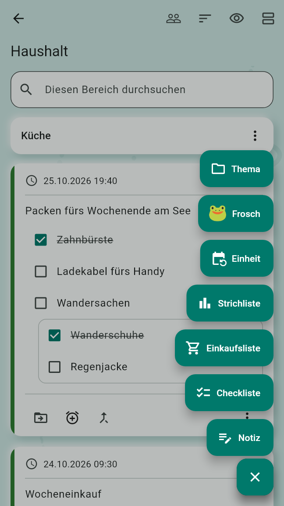
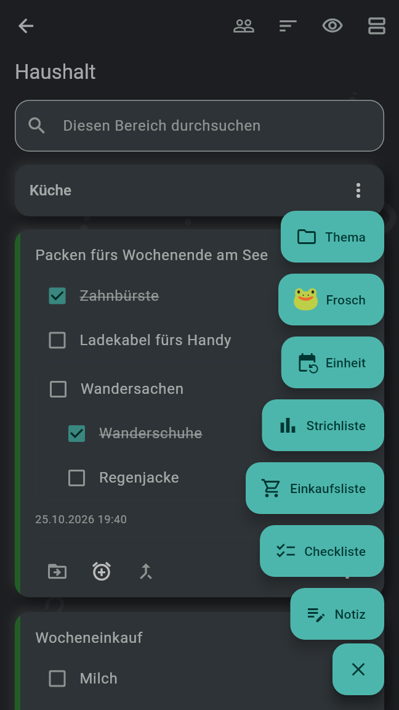
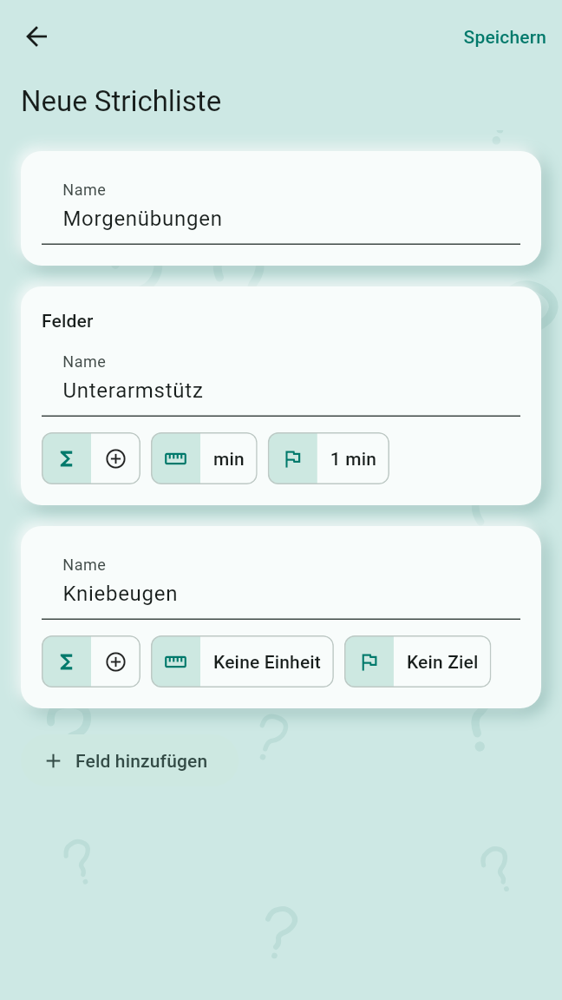
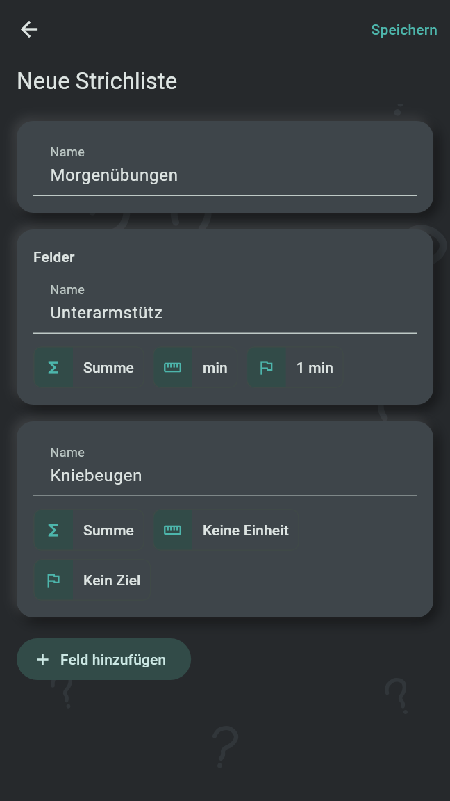
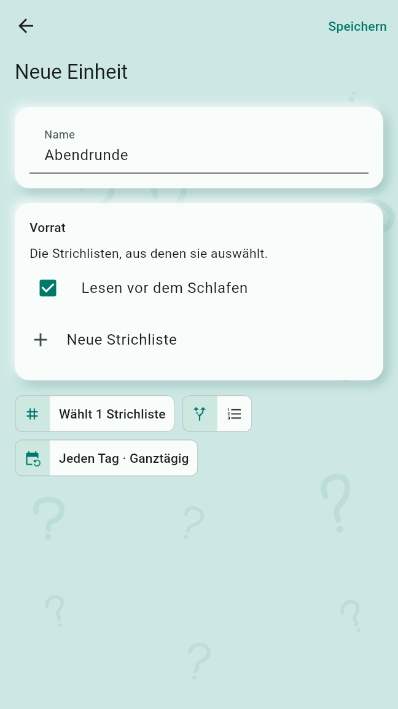
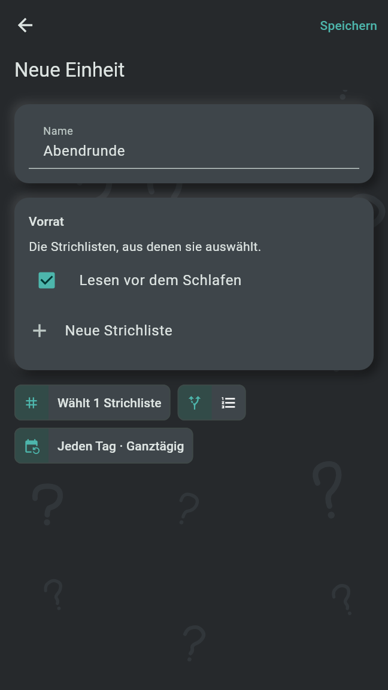
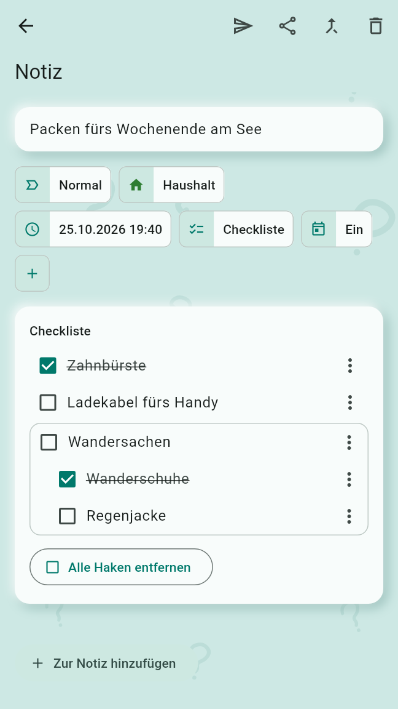
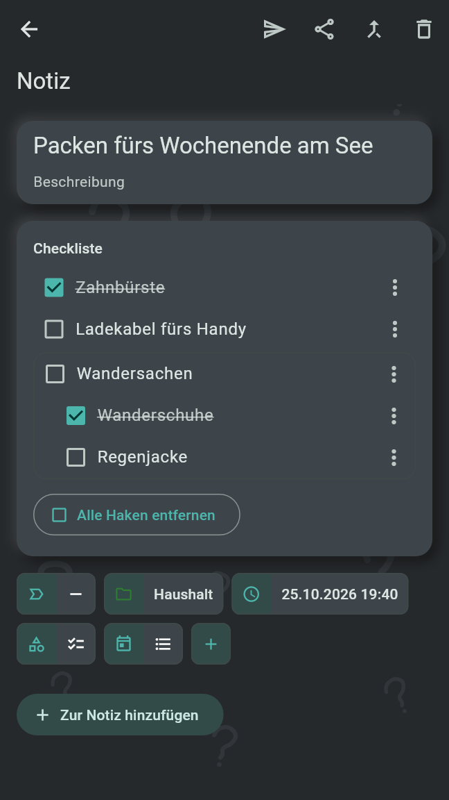

Eine Notiz kann zur Checkliste, zur Einkaufsliste oder zur Strichliste werden, und sie kann neben Routinen und Erinnerungen eine Einheit oder einen Frosch hervorbringen. Eine Notiz ist höchstens eins von Strichliste, Checkliste und Einkaufsliste.
Das „+“ eines Bereichs, eines Themas und von Alle Notizen fächert nach oben auf, jedes ein Symbol mit seinem Wort: Notiz, Checkliste, Einkaufsliste, Strichliste, Einheit und Frosch, in einem Bereich auch Thema. Einheit, Frosch und Thema zeigen sich nur denen, die sie anlegen dürfen, in einem geteilten Bereich den Verwaltern. Was angelegt wird, liegt im gezeigten Bereich oder Thema; aus Alle Notizen angelegt liegt es nirgends. Solange der Fächer offen ist, schließt ihn das „+“; ein zweites Tippen darauf, ein Tippen daneben oder Zurück schließen ihn.


Wer einen Namensdialog mit Abbrechen oder die Seite der Strichliste oder der Einheit ohne Speichern verlässt, legt nichts an; eine mit Neue Strichliste angelegte Strichliste bleibt.




Jede Notiz hat eine Art: eine einfache Notiz, eine Checkliste, eine Einkaufsliste oder eine Strichliste. Eine einfache Notiz ist ihr Text. Bei den anderen Arten ist die erste Zeile der Notiz ihr Name, als Überschrift oben auf ihrer Karte und im Editor; der Rest ihres Textes ist ihre Beschreibung, klein unter dem Namen und auf eine Zeile eingeklappt, bis ein Tippen sie aufklappt. Gleich danach kommen die Zeilen oder die Strichliste, dann die Plaketten, Fotos und Aufnahmen und zuletzt die Ergänzungen. Im Editor sind Name und Beschreibung zwei Felder; Speichern schreibt sie wieder als einen Text, und eine Notiz, die unverändert geöffnet und verlassen wird, wird nicht geschrieben.
In einer Liste zeigt jede Karte ihre Notiz in ihrer Kompaktansicht oder ihrer Detailansicht. Die Detailansicht, die Voreinstellung, zeigt die Notiz ganz; die Kompaktansicht zeigt einen Blick nach ihrer Art: eine einfache Notiz ihre erste Zeile und die zwei Zeilen danach, eine Checkliste ihren Namen und „3 von 7 offen“, eine Einkaufsliste ihren Namen und „4 offen“, eine Strichliste ihren Namen und je Feld die Summe von heute gegen ihr Ziel, etwa „Seiten 30 / 50 Seiten“, in einem geteilten Bereich aus deinen eigenen Einträgen, und eine Notiz, die eine Einheit ausführt, ihre erste Zeile, ihren nächsten Lauf und „diese Woche 4 erledigt / 1 ausgelassen“. Die Kompaktansicht hat keinen Erfassungskontext und keine der Schaltflächen unten an der Karte; ihr ⋮ sitzt oben rechts und bietet nach Bearbeiten Ablegen in … und Zusammenführen mit … an. Der Knopf in der Leiste der Liste zeigt alle Karten kompakt oder ausführlich. Ein Tippen auf eine Karte wechselt nur diese Karte; das Handy behält das für diese Liste, bis der Knopf in der Leiste wieder benutzt wird. Langes Drücken öffnet weiter den Editor.
Eine Checkliste ist eine Notiz, deren Zeilen abgehakt werden, etwa eine Packliste. Zur Checkliste machen steht im ⋮ der Karte der Notiz, und die Plakette „Art“ im Editor der Notiz bietet es an. Die erste Zeile der Notiz bleibt ihr Text, als ihr Name; jede andere Zeile, die nicht leer ist, wird eine Zeile der Liste. Eine Zeile, die mit einem Leerzeichen oder Tabulator beginnt, kommt unter die Zeile darüber, und eine, die mit „✓ “ beginnt, ist abgehakt. Eine Notiz, die zur Checkliste wird, ist nicht mehr unsortiert.


In einem geteilten Bereich fügt jeder mit einer Rolle Zeilen hinzu und hakt sie ab; Umbenennen, Verschieben und Löschen einer Zeile bleiben beim Verfasser der Notiz oder der Zeile und bei den Verwaltern.
Die Agenda zeigt heute jede Checkliste ohne Routine oder Erinnerung in einer Reihe, solange sie offene Zeilen hat, etwa „Vor der Reise: 3 von 7 offen“, nach den Einkaufslisten; ein Tippen öffnet die Liste. Ist jede Zeile abgehakt, ist die Reihe weg, bis eine Zeile wieder freigegeben oder hinzugefügt wird. Auf der Agenda zeigen im ⋮ der Karte der Checkliste und als Plakette in ihrem Editor nimmt sie aus der Agenda und holt sie zurück. Jede Checkliste beginnt damit eingeschaltet. Die Wahl gilt nur für dich: Sie geht an deine eigenen Geräte, und in einem geteilten Bereich entscheidet jede Person für ihre eigene Agenda. Eine Checkliste aus einem gesperrten Bereich, der auf maskiert steht, erscheint als „Private Checkliste“ mit ihren Zahlen.
Eine Routine oder Erinnerung aus einer Checkliste beginnt jede Fälligkeit mit lauter freien Zeilen, auf allen eigenen Geräten und für alle in einem geteilten Bereich gleich. Ihre Zeile in der Agenda listet die Zeilen der Liste unter ihrem Titel, abgehakt wie für diese Fälligkeit, und sie lassen sich dort abhaken. Die Fälligkeit ist erledigt, sobald jede Zeile für sie abgehakt ist, von wem auch immer, oder wenn ihr Kästchen abgehakt wird. Karte und Editor der Notiz zeigen die Zeilen so abgehakt wie für die Fälligkeit, auf der sie gerade steht.
Eine Einkaufsliste ist eine Notiz, deren Zeilen eine Weile nach dem Abhaken wiederkommen, etwa der Wocheneinkauf. Zur Einkaufsliste machen steht im ⋮ der Karte der Notiz, und die Plakette „Art“ im Editor der Notiz bietet es an. Wie bei einer Checkliste bleibt die erste Zeile der Name, und jede andere wird eine Zeile der Liste; Einkaufslisten haben keine Gruppen, und eine Zeile mit „✓ “ ist durchgestrichen.
Auf der Agenda zeigen im ⋮ der Karte der Einkaufsliste und als Plakette in ihrem Editor wählt, wie die Agenda die Liste heute zeigt:
Eine Liste ohne offene Zeilen erscheint nicht, gleich was gewählt ist, bis eine Zeile wiederkommt oder hinzugefügt wird. Die Reihen stehen nach den ganztägigen Fälligkeiten von heute; ein Tipp öffnet die Liste. Die Wahl ist nur für dich: Sie geht an deine eigenen Geräte, und in einem geteilten Bereich entscheidet jede Person für ihre eigene Agenda. Eine Liste, für die niemand gewählt hat, beginnt so, wie die frühere Einstellung des Geräts für alle Einkaufslisten sie zeigte: mit Aus, wo sie „Gar nicht“ lautete, mit jeder offenen Zeile, wo sie „Jede heute wiedergekommene Zeile in einer eigenen Reihe“ lautete. Eine Liste aus einem gesperrten Bereich, der auf maskiert steht, erscheint als „Private Einkaufsliste“ mit ihrer Zahl. Eine Routine oder Erinnerung aus einer Einkaufsliste ist nur erledigt, wenn sie abgehakt wird.
Zu einer Einkaufsliste hinzufügen im ⋮ des Erfassungsbildschirms macht jede Zeile der Erfassung zu einer Zeile der gewählten Liste und behält keine Notiz. Eine Aufnahme gibt die Zeilen ihres Transkripts. Wann es angeboten wird, steht in Erfassen und sortieren.
Eine Strichliste ist eine Notiz, die festhält, wie viel von etwas getan wurde, etwa Liegestütze, gelesene Seiten oder Minuten Video. Zur Strichliste machen im ⋮ der Karte der Notiz oder des Erfassungsbildschirms öffnet die Seite ihres ersten Felds; Speichern macht die Notiz zur Strichliste, und sie ist nicht mehr unsortiert.
Ein Feld hat einen Namen, eine Maßeinheit, ein freiwilliges Ziel, das in jedem neuen Eintrag vorausgefüllt ist, und wie „Ein Tag mit mehreren Einträgen zählt“: Ihre Summe oder Den größten Wert, was der Art der Maßeinheit folgt, bis es gewählt ist. Die Maßeinheit wird in ein Feld getippt. Darunter erscheinen die bekannten Maßeinheiten für Zeit, Strecke, Masse, Geschwindigkeit, Temperatur und Winkel, die zum Getippten passen, als Vorschläge, nach ihrem Kürzel oder ihrem deutschen oder englischen Namen: „k“ schlägt kg, km und km/h vor, „min“ schlägt min vor. Ein Tippen auf einen Vorschlag wählt diese bekannte Maßeinheit; alles andere, etwa „Seiten“, bleibt eine eigene Maßeinheit, und ein leeres Feld hat keine Maßeinheit. Sobald Einträge Werte für ein Feld haben, bleibt die Art seiner Maßeinheit, und nur Maßeinheiten dieser Art werden vorgeschlagen. Die Einstellungen unter „Maßeinheiten“ wählen, ob dieses Gerät die bekannten Maßeinheiten metrisch oder angloamerikanisch zeigt oder wie die Region des Telefons; gespeichert werden die Werte immer metrisch. Feld ausblenden nimmt ein Feld aus der Ansicht; seine Werte bleiben gespeichert und kommen mit Feld wieder zeigen zurück.
Der Editor der Notiz enthält die Einrichtung: unter „Felder“ den Namen jedes Felds mit seiner Regel, seiner Maßeinheit und seinem Ziel als Plaketten, etwa „Summe“, „Seiten“ und „50 Seiten“, und „Ausgeblendet“, solange es ausgeblendet ist. Ein Tippen auf den Namen oder eine Plakette öffnet die Seite des Felds; Feld hinzufügen öffnet die Seite eines neuen. Der Editor zeigt kein Diagramm und keine Einträge.
Die Strichliste steht auf ihrer Karte in der Detailansicht: unter ihrem Namen Eintrag hinzufügen, dann „Ein Balken pro“ Tag, Woche, Monat oder Jahr, ein Diagramm je gezeigtem Feld und die Einträge, der neueste zuerst. Die letzten fünf stehen da; die älteren sind darunter eingeklappt, mit ihrer Anzahl, etwa „12 ältere Einträge“, was ein Tippen zeigt und wieder verbirgt. Die Länge eines Balkens und die gezeigten älteren Einträge behält dieses Gerät je Strichliste. Eintrag hinzufügen steht auch im ⋮ der Karte der Strichliste.


Eine Einheit ist eine Routine, die für jede Fälligkeit ein paar Strichlisten aus ihrem Vorrat auswählt. Sie entsteht wie eine Routine, mit Einheit unter dem Wecker, „Routine, Erinnerung, Frosch oder Einheit“, auf der Karte einer Notiz oder dem Erfassungsbildschirm, oder hinter dem „+“ am Ende der Plaketten im Editor der Notiz. Neue Einheit in der Leiste von Alle Routinen und Erinnerungen legt eine an, deren Notiz der in ihrem Editor getippte Text ist. Eine Einheit hat Plan, Erneut erinnern, Eskalation, Serie und Einhaltung einer Routine. Über dem Plan enthält ihr Editor:
Die heutige Zeile einer Einheit in der Agenda listet ihre Auswahl unter ihrem Titel, in der gewählten Reihenfolge, jede Strichliste mit ihren Zielen, etwa „Liegestütze 20 Mal“, durchgestrichen, sobald sie einen Eintrag hat. Ein Tipp auf eine Strichliste der Auswahl öffnet ihr Eintragsformular, mit den Zielen vorausgefüllt; Speichern hält ihn für diese Fälligkeit fest. Jede ohne Eintrag bietet Noch eine, solange der Vorrat eine nicht gewählte Strichliste hat. Die Fälligkeit ist erledigt, sobald jede ausgewählte Strichliste einen Eintrag hat, von wem auch immer, oder wenn ihr Kästchen abgehakt wird; ein entfernter Eintrag hebt das wieder auf. Morgen und die Tage danach zeigen nur, wie viele sie wählt, etwa „Wählt 3 Strichlisten“: Gewählt wird am Tag selbst. Die Auswahl ist auf allen eigenen Geräten und für alle in einem geteilten Bereich dieselbe.
Ein Frosch ist eine Aufgabe einer Notiz ohne Uhrzeit, einmal zu erledigen. Frosch unter dem Wecker auf der Karte einer Notiz oder dem Erfassungsbildschirm, oder hinter dem „+“ am Ende der Plaketten im Editor der Notiz, macht sofort einen; eine Notiz hat höchstens einen offenen Frosch. Ein Frosch klingelt nie und wird nie verpasst; was klingeln muss, ist eine Erinnerung.
Unter den Fälligkeiten von heute bietet der Abschnitt „Iss einen Frosch“ der Agenda zwei offene Frösche am Tag an, und einer davon genügt. Einen anderen tauscht einen Frosch gegen den nächsten. Sobald einer abgehakt ist, steht nur noch dieser für den Tag da, durchgestrichen; wird er wieder freigegeben, stehen die anderen wieder da. Die Auswahl ist auf allen eigenen Geräten dieselbe. Ein Tipp auf einen Frosch öffnet seine Notiz; die Überschrift öffnet die Froschansicht, ebenso Frösche in der Leiste über der Liste der Bereiche, zwischen Alle Notizen und dem Papierkorb.
Die Froschansicht listet die offenen Frösche, die ältesten zuerst, jeden mit seinem Kästchen, und darunter den eingeklappten Abschnitt „Erledigt“ mit den abgehakten, die neuesten zuerst, jeder mit seinem Datum („Erledigt am …“); sein Kästchen hebt das Abhaken auf. Langes Drücken bietet Löschen, das einmal nachfragt; der Frosch kommt in den Papierkorb, seine Notiz bleibt. In einem geteilten Bereich legt ein Verwalter Frösche an und löscht sie, und jeder mit einer Rolle hakt sie ab; ein Frosch, den einer isst, ist für alle gegessen.